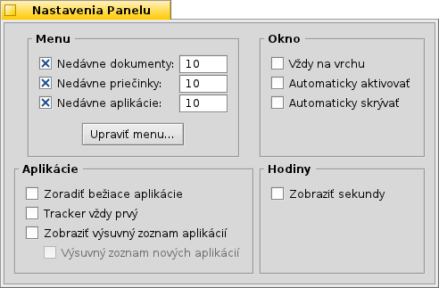

Slovenčina
Slovenčina Français
Français Deutsch
Deutsch Italiano
Italiano Русский
Русский Español
Español Svenska
Svenska 日本語
日本語 Українська
Українська 中文 ［中文］
中文 ［中文］ Português
Português Suomi
Suomi English
English| Index |
|
Menu Panelu Oznamovacia oblasť Zoznam bežiacich programov |
Panel
Panel je malý panel, ktorý je štandardne umiestnený v pravom hornom rohu obrazovky. Je to Haiku obdoba panelu úloh vo Windows, s jeho tlačidlom Štart. Obsahuje menu Panelu, odkiaľ môžete spustiť aplikácie a nastavenia, oznamovaciu oblasť s hodinami a ostatnými nástrojmi pod ním a zoznam momentálne bežiacich programov na spodku.

Panel môžete presunúť do akéhokoľvek rohu obrazovky alebo umiestniť ako lištu kdekoľvek pozdĺž horného alebo spodného okraja obrazovky chytením za bodkovanú oblasť na boku oznamovacej oblasti, potiahnutím a následným pustením na novú pozíciu. Môžete ho tiež zložiť do kompaktnejšej verzie, potiahnutím a pustením bodkovanej oblasti na menu Panelu.
 Menu Panelu
Menu Panelu
Keď kliknete na vrch Panelu, otvorí sa vám menu:

O tomto systéme - Zobrazí základné informácie o systéme, licenciách a ľuďoch, ktorí prispeli do projektu Haiku.
Nájsť... - Otvorí dialóg Požiadavky.
Zobraziť replikantov - Zobrazí/skryje malý prvok Replikanta, ktorý môžete použiť na presúvanie, odstránenie alebo na prístup k jeho kontextovému menu.
Pripojiť - Poskytuje rovnaké možnosti ako keď je vyvolané pravým kliknutím na Plochu (pozri Pripájanie Diskov).
Nastavenia Panelu... - Otvorí okno na nastavenie Panelu (pozri nižšie).
Vypnúť - Poskytuje možnosti buď alebo .
Nedávne dokumenty, priečinky, aplikácie - Zobrazí zoznam naposledy otvorených dokumentov, priečinkov a aplikácií (pozri nižšie).
Aplikácie, Demá, Applety Panelu, Nastavenia - Zoznam nainštalovaných aplikácií, dem, apletov a nastavení (pozri nižšie).
Nastavenia Panelu

Menu
Tu môžete nastaviť počet nedávnych dokumentov, priečinkov a aplikácií, ktoré sú zobrazené v ich menu v Paneli alebo či ich vôbec chcete vidieť.
Tlačidlo otvorí priečinok /boot/home/config/be/. V ňom nájdete súbory a priečinky, ktoré sa zobrazujú v Paneli, štandardne sú to , , a .
Môžete zmazať alebo pridať položky, ako napríklad odkazy na aplikácie, dokumenty alebo dokonca požiadavky, ak ich jednoducho prekopírujete/vymažete do/z tohto priečinka.Je ešte jednoduchšie jednoducho potiahnuť súbor, priečinok alebo uloženú požiadavku a pustiť ju na miesto v Paneli, kde ju chcete mať.
Okno
Panel vždy zostane nad všetkými ostatnými oknami. Panel skočí do popredia ak sa ho dotkne kurzor myši. Panel je zredukovaný len na pár pixlov a zobrazí sa len ak sa ich dotkne kurzor myši. Applications
Sorts the list of running programs alphabetically. Even if you sort alphabetically, the Tracker entry always stays first in the list. Provides a small widget to show/hide all windows of a program directly under its entry in the Deskbar. Newly launched programs have their windows automatically expanded under their entry in the Deskbar. Removes the text labels of running applications. Adjusts the icon size of running applications. Clock
Adds the display of seconds to the clock. Adds the abbreviation of the weekday to the clock.
Oznamovacia oblasť

Okrem iných vecí sa na oznamovacej oblasti nachádzajú aj hodiny. Prejdite na ne kurzorom, aby sa vám zobrazil čas v bublinovej nápovede. Kliknite ľavým tlačidlom, pre zobrazenie kalendára. Kliknite pravým tlačidlom, pre zobrazenie/skrytie hodin, alebo spustenie nastavení Času, aby ste ho nastavili.
Akýkoľvek program môže umiestniť ikonu do oznamovacej oblasti, aby poskytol rozhranie pre používateľa. Napríklad emailový systém zobrazuje odlišný symbol, keď máte neprečítanú poštu a poskytuje kontextové menu napr. na vytvorenie alebo skontrolovanie správ. Správca Procesov je ďalší príklad, ktorý používa jeho ikonu v oznamovacej oblasti, aby poskytol informácie (využitie CPU a pamäte) a aby poskytol kontextové menu.
Zoznam bežiacich programov

Môžete prepnúť na konkrétnu spustenú aplikáciu kliknutím na jeho položku v Paneli a vybratím (jedného z) jeho okien z podmenu. Kliknutím pravým tlačidlom môžete minimalizovať alebo zavrieť okno alebo celú aplikáciu.
Ak ste aktivovali Vysúvacie zoznamy aplikácii v nastaveniach Panelu, môžete rozbaliť resp. zbaliť zoznam okien priamo pod položkou danej aplikácie.
Pred každým z okien aplikácie je symbol poskytujúci informácie o jeho stave. Jasný symbol znamená, že okno je viditeľné; tmavý, že je minimalizované. Tri čiary pred symbolom znamenajú, že sa nenachádza na aktuálnej pracovnej ploche.